But in practice master plans fail - because they create totalitarian order, not organic order. They are too rigid; they cannot easily adapt to the natural and unpredictable changes that inevitably arise in the life of a community.
—Christopher Alexander
Patterns#
The idea of software design patterns came from the architect Christopher Alexander. He wrote a book, a pattern language, about how different approaches to architecture could be used across different scales (from the country to the pantry) to help people feel better about living in their communities. It’s a lovely book (everyone should own a copy); a child can understand it yet it is still useful to professional architects.
This can not be said for the book it inspired in computer science, “Design Patterns: Elements of Reusable Object-Oriented Software” This book was not child friendly, in fact everyone I knew secretly hated it because of its illegibility; but would make sure to have a copy of it on their shelf to look like they were in the club.
The ideas within the book were great and the follow up books that translated it into English were really useful. Basically it described a set of techniques for solving classes of problems that come up over and over again. If you haven’t learned the patterns yet, find a copy of a patterns book written by a practitioner in your language(s) and work through it. You will level up.
In chapter 5 of “Practical UML STATECHARTS in C/C++” I was leveled up by Miro Samek. He describes 5 statechart patterns and made the bold claim that statecharts are a pattern of patterns. I completely agree with him. So here is my translation of his work into this library. I’ll start each pattern with quotes from his book, then write about it within the context of this work.
In This Section:
Ultimate Hook#
Formal description:
[The Ultimate Hook Pattern provides] common facilities and policies for handling events but let clients override and specialize every aspect of the system’s behavior.
The semantics of state nesting provide the desired mechanism of handling all events, first in the context of the client code (the nested state) and of automatically forwarding of all unhandled events to the [parent state] (the default behavior). In that way, the client code intercepts every stimulus and can override every aspect of the behavior. To reuse the default behavior, the client simply ignores the event and lets the superstate handle it (the [child state] inherits behavior from the superstate) 5
To understand the ultimate hook pattern, you first have to
understand what a hook is. It is just some code in an if-elif clause. A
hook is just some code that catches an event, runs your client
code and then returns something which tells the event processor to
stop searching. A hook doesn’t cause a state transition. It is a way to
get the event processor’s search algorithm to do work for you without changing
state.
You see, anytime the event processor is trying to figure out what to do with an event it needs to search your statechart. If it finds that it needs to do a transition, it will enlist the heavy-duty parts of it’s algorithm to make sure that the Harel Formalism occurs. The hook has nothing to do with this, because it short circuits the search before it does a transition, but not before it gets this search algorithm to do some useful work.
If your if-else structure in your state method catches the signal name of an
event, runs your code, then returns the return_status.HANDLED back to the
event processor, no state transition will occur. This is how you make a hook.
You make sure that part of your if-elif clause catches the event signal, runs
your client code and returns the return_state.HANDLED
value.
Here is a simple example which demonstrates a hook. In this example we will show that we can get some client code to run when we post an event with the signal name of BEHAVIOR_NAME to your statechart:
import time
from miros import spy_on, pp
from miros import ActiveObject
from miros import signals, Event, return_status
@spy_on
def outer_state(chart, e):
status = return_status.UNHANDLED
if(e.signal == signals.BEHAVIOR_NAME):
# your code would go here
chart.scribble("your outer_state code here")
status = return_status.HANDLED
else:
chart.temp.fun = chart.top
status = return_status.SUPER
return status
ao = ActiveObject()
ao.start_at(outer_state)
ao.post_fifo(Event(signal=signals.BEHAVIOR_NAME))
time.sleep(0.001)
pp(ao.spy())
The highlighted code describes the hook. We see that when the BEHAVIOR_NAME
signal is caught by this state method it runs your client code then returns return_status.HANDLED.
The spy output would look like this:
1 2 3 4 5 6 7 8 9 | ['START',
'SEARCH_FOR_SUPER_SIGNAL:outer_state',
'ENTRY_SIGNAL:outer_state',
'INIT_SIGNAL:outer_state',
'<- Queued:(0) Deferred:(0)',
'BEHAVIOR_NAME:outer_state',
'your outer_state code here',
'BEHAVIOR_NAME:outer_state:HOOK',
'<- Queued:(0) Deferred:(0)']
|
Lines 1-5 describe the first rtc event which occurs when we start the statechart. Lines 5-9 of the spy log actually describe the hook behavior. The event processor ran, searching the statechart starting at the outer_state method to see if it knew how to process the BEHAVIOR_NAME signal and it did: the client code just scribbled something into our spy log so we can see what happened. On line 7 we see the result of this in the spy log. Furthermore, no state transition occurred.

Now suppose we add another state within the outer state and start our active object there.
1 2 3 4 5 6 7 8 9 10 11 12 13 14 15 16 17 18 19 20 21 22 23 24 25 26 27 28 29 30 31 32 33 34 35 | import time
from miros import spy_on, pp
from miros import ActiveObject
from miros import signals, Event, return_status
@spy_on
def outer_state(chart, e):
status = return_status.UNHANDLED
if(e.signal == signals.BEHAVIOR_NAME):
# your code would go here
chart.scribble("your outer_state code here")
status = return_status.HANDLED
else:
chart.temp.fun = chart.top
status = return_status.SUPER
return status
@spy_on
def inner_state(chart, e):
if(e.signal == signals.BEHAVIOR_NAME):
# your code would go here
chart.scribble("your inner_state code here")
status = return_status.HANDLED
else:
chart.temp.fun = chart.top
status = outer_state
return status
ao = ActiveObject()
ao.start_at(inner_state)
ao.post_fifo(Event(signal=signals.BEHAVIOR_NAME))
time.sleep(0.001)
pp(ao.spy())
|
Then look at the spy:
1 2 3 4 5 6 7 8 9 10 11 | ['START',
'SEARCH_FOR_SUPER_SIGNAL:inner_state',
'SEARCH_FOR_SUPER_SIGNAL:outer_state',
'ENTRY_SIGNAL:outer_state',
'ENTRY_SIGNAL:inner_state',
'INIT_SIGNAL:inner_state',
'<- Queued:(0) Deferred:(0)',
'BEHAVIOR_NAME:inner_state',
'your inner_state code here',
'BEHAVIOR_NAME:inner_state:HOOK',
'<- Queued:(0) Deferred:(0)']
|
Ok, no surprises. The inner_state hooked the BEHAVIOR_NAME signal and ran some client code.
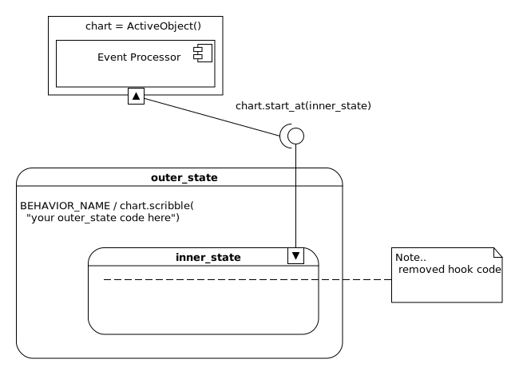Now let’s remove the handling of the BEHAVIOR_NAME from our inner state and see what happens when we start the active object in the inner_state then send it an event with the BEHAVIOR_NAME.
1 2 3 4 5 6 7 8 9 10 11 12 13 14 15 16 17 18 19 20 21 22 23 24 25 26 27 28 29 30 31 32 33 34 35 36 | import time
from miros import spy_on, pp
from miros import ActiveObject
from miros import signals, Event, return_status
@spy_on
def outer_state(chart, e):
status = return_status.UNHANDLED
if(e.signal == signals.BEHAVIOR_NAME):
# your code would go here
chart.scribble("your outer_state code here")
status = return_status.HANDLED
else:
chart.temp.fun = chart.top
status = return_status.SUPER
return status
@spy_on
def inner_state(chart, e):
#if(e.signal == signals.BEHAVIOR_NAME):
# # your code would go here
# chart.scribble("your inner_state code here")
# status = return_status.HANDLED
#else:
# chart.temp.fun = outer_state
# status = return_status.SUPER
chart.temp.fun = outer_state
status = return_status.SUPER
return status
ao = ActiveObject()
ao.start_at(inner_state)
ao.post_fifo(Event(signal=signals.BEHAVIOR_NAME))
time.sleep(0.001)
pp(ao.spy())
|
In the highlighted code you can see that I adjusted the inner_state to run as
if it’s else method clause was always active. I did this so that it would not
handle the BEHAVIOR_NAME signal. Now we run the code and look at the
spy output.
1 2 3 4 5 6 7 8 9 10 11 12 | ['START',
'SEARCH_FOR_SUPER_SIGNAL:inner_state',
'SEARCH_FOR_SUPER_SIGNAL:outer_state',
'ENTRY_SIGNAL:outer_state',
'ENTRY_SIGNAL:inner_state',
'INIT_SIGNAL:inner_state',
'<- Queued:(0) Deferred:(0)',
'BEHAVIOR_NAME:inner_state',
'BEHAVIOR_NAME:outer_state',
'your outer_state code here',
'BEHAVIOR_NAME:outer_state:HOOK',
'<- Queued:(0) Deferred:(0)']
|
The highlighted lines show how our event processor tried to determine what to do with the event containing the BEHAVIOR_NAME signal.
It called the inner_state with the event (8), it wasn’t handled, so it called the parent outer_state with the same event (9) and we see on line (10) that the outer_state client code was run. Finally, on line (11) the spy instrumentation tells us that it detected a hooked event. When you see this in the log it means there was no state transition.
So, the outer_state hook code caught an event that was sent to the inner_state. The Harel Formalism followed by the event processor determines that when it has an event, it will search outward from the current state, to the next parent state, then the next parent state over and over until your event is handled or, it reaches the top most state of your HSM. This means that any inner state method will automatically inherit the hook code of any outer state. The outer most state contains the ultimate hook; this is why the pattern is called what it is.
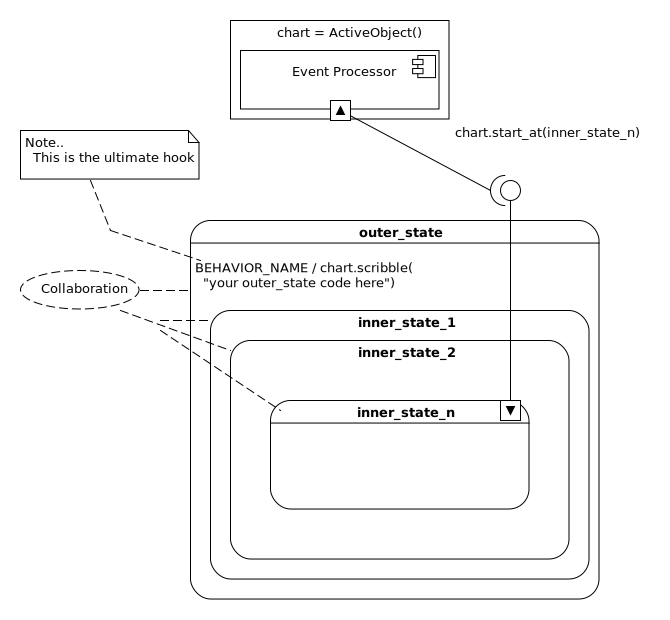Note
To show that there is some sort of explicit design feature occuring on your diagram, something that might be too subtle for someone to see right away UML provides a dotted-collaboration-bubble. It is very easy to over use this feature and clutter up your diagram.
You can overwrite the behavior of the outer state hooks simply by explicitly handling the signal in an inner state. These ideas are very similar to inheritance and overloading in object oriented programming.
As a designer you would write default client code behavior in the outer states of charts, and all of your inner states would get this behavior for free. If they needed to overwrite this behavior they would specifically handle the event in their state methods.
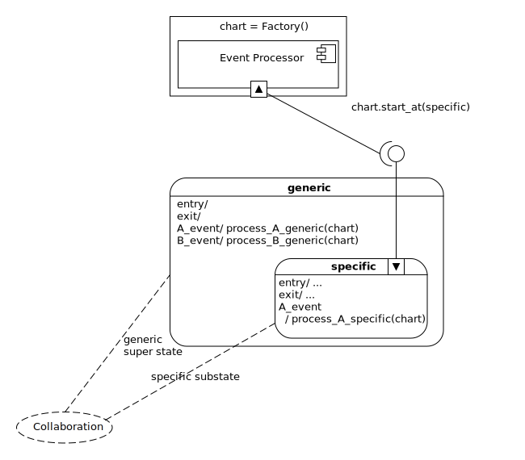You would place generic reactions to events in your outer states and place the specific responses in your inner states. Let’s build out the above diagram:
import time
from miros import pp
from miros import Factory
from miros import signals, Event, return_status
def process_a_generic(chart, e):
chart.scribble('processing a generic')
return return_status.HANDLED
def process_b_generic(chart, e):
chart.scribble('processing b generic')
return return_status.HANDLED
# overrides the generic hook while in the specific state
def process_a_specific(chart, e):
chart.scribble('processing a specific')
return return_status.HANDLED
chart = Factory('ultimate_hook_example')
generic = chart.create(state='generic'). \
catch(signal=signals.a, handler=process_a_generic). \
catch(signal=signals.b, handler=process_b_generic). \
to_method()
specific = chart.create(state='specific'). \
catch(signal=signals.a, handler=process_a_specific). \
to_method()
chart.nest(generic, parent=None). \
nest(specific, parent=generic)
chart.start_at(specific)
chart.post_fifo(Event(signal=signals.b))
chart.post_fifo(Event(signal=signals.a))
time.sleep(0.001)
pp(chart.spy())
First of all we notice that instead of using an active object the diagram asks us to use a factory. To use the factory we create states and tie specific signals to callback functions.
The highlighted code shows the callback functions that are acting like hooks.
Pay special attention to what they return. If they do not return
return_status.HANDLED they will not work as hooks.
We can deterime if we got the expected behavior by looking at the spy log:
1 2 3 4 5 6 7 8 9 10 11 12 13 14 15 16 | ['START',
'SEARCH_FOR_SUPER_SIGNAL:specific',
'SEARCH_FOR_SUPER_SIGNAL:generic',
'ENTRY_SIGNAL:generic',
'ENTRY_SIGNAL:specific',
'INIT_SIGNAL:specific',
'<- Queued:(0) Deferred:(0)',
'b:specific',
'b:generic',
'processing b generic',
'b:generic:HOOK',
'<- Queued:(1) Deferred:(0)',
'a:specific',
'processing a specific',
'a:specific:HOOK',
'<- Queued:(0) Deferred:(0)']
|
On lines 10 and 11 we see the reaction to our first b signal. As expected
the generic state’s hook function was run while the statechart remained in the
specific state.
On lines 14 and 15 we see the specific behavior for the a signal. The
statechart ran the client code in the specific state then
stopped processing the signal.
Reminder#
Formal description:
“Make the statechart topology more flexible by inventing an event an posting it to itself.
Often in state modeling, loosely related functions of a system are strongly coupled by a common event. Consider, for example, periodic data acquisition, in which a sensor producing the data needs to be polled at a predetermined rate. Assume that a periodic TIME_OUT event is dispatched to the system at the desired rate to provide the stimulus for polling the sensor. Because the system has only one external event (the TIME_OUT event), it seems that this event needs to trigger both the polling of the sensor and the processing of the data. A straightforward but suboptimal solution is to organize the state machine into two distinct orthogonal regions (for polling and processing). However, orthogonal regions increase the cost of dispatching events … and require complex synchronization between the regions because the polling and processing are not quite independent.” 6
Note
If you find yourself drawing two separate states with a lot of arrows connecting them, remind yourself of this reminder pattern.
The reminder pattern uses the ultimate hook pattern mixed with artificial event injection. It’s an artificial event because it is invented by the statechart and injected to itself rather than being invented and injected by an outside caller.
I’ll try to explain this idea by showing a bad, but working design, show how it is expensive and then refactor the design using the reminder pattern.
We will begin with some specifications:
Part of the system will poll a sensor based on a system clock running with a period of 100ms.
Once polled this information will be sent to some processing code.
After three such events, the system will perform some processing and it will enter a busy state (maybe communicating with a server).
While the unit is in a busy state it should not poll the sensor or process input.
After the busy process is completed the system should go back into it’s polling mode.
Here is a first shot at implementing this specification:
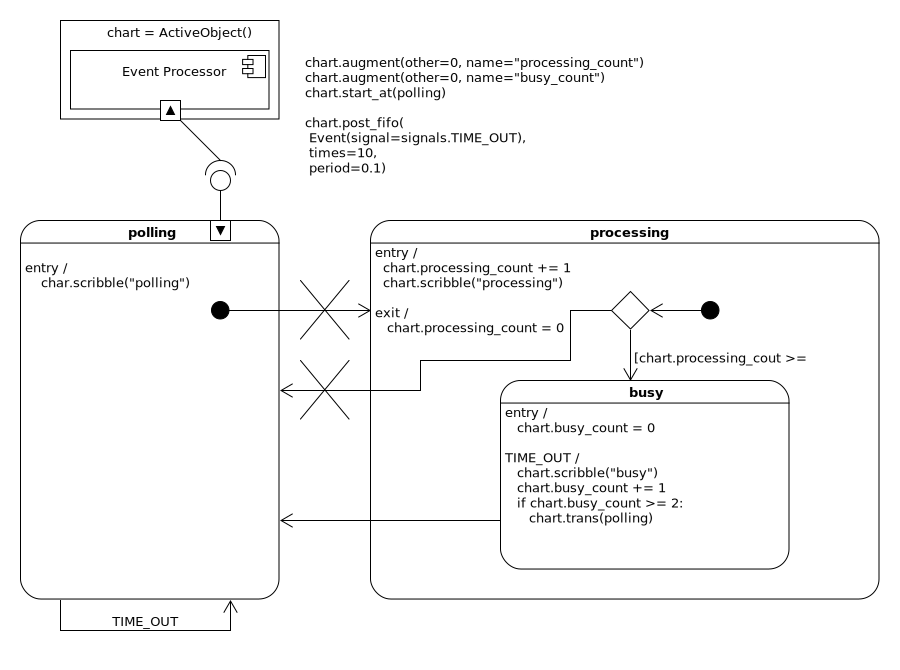We create a polling state which upon entry poles something. Any time there is a time out it will re-enter the state making this happen.
Then when it initializes it transitions into the processing state. Upon
entering the processing state we add one to the chart.processing_count and
then process the message. When the processing state initializes itself it will
either go back to the polling state or enter the busy state, if the
chart.processing_count is high enough.
Upon entering the busy state the chart.busy_count is set to zero. Then the
TIME_OUT event is used with a hook to work the information. In
this example we just scribble “busy” into the spy
log. Then we add 1 to our chart.busy_count. If the count is big enough we
transition back to the polling state. Upon exiting the processing state, the
chart.processing_count is set to 0. That should work!
Actually, it won’t work at all.
Notice the large Xs on the diagram. These are there to show that they are illegal transitions. The Miro Samek event processing algorithm will only allow INIT_SIGNAL events to drill further into child states; they can not leave there current state and navigate to another region of the chart. I’ll just pretend I didn’t know about this and continue.
Let’s see what happens when we try to make this broken statechart
import time
from miros import pp
from miros import Factory
from miros import signals, Event, return_status
def polling_time_out(chart, e):
return chart.trans(polling)
def polling_enter(chart, e):
chart.scribble("polling")
return return_state.HANDLED
def polling_init(chart, e):
# illegal (init can't leave parent states)
return chart.trans(processing)
def processing_entry(chart, e):
chart.processing_count += 1
chart.scribble("processing")
return return_status.HANDLED
def processing_init(chart, e):
status = None
if chart.processing_count >= 3:
status = chart.trans(busy)
else:
# illegal (init can't leave parent states)
status = chart.trans(polling)
return status
def processing_exit(chart, e):
chart.processing_count = 0
return return_status.HANDLED
def busy_entry(chart, e):
chart.busy_count = 0
return return_status.HANDLED
def busy_time_out(chart, e):
chart.busy_count += 1
status = return_status.HANDLED
if chart.busy_count >= 2:
status = chart.trans(polling)
return status
chart = Factory('reminder_pattern_needed_1')
chart.augment(other=0, name="processing_count")
chart.augment(other=0, name="busy_count")
polling = chart.create(state="polling"). \
catch(signal=signals.TIME_OUT, handler=polling_time_out). \
catch(signal=signals.INIT_SIGNAL, handler=polling_init). \
catch(signal=signals.PROCESS, handler=polling_init). \
to_method()
processing = chart.create(state="processing"). \
catch(signal=signals.ENTRY_SIGNAL, handler=processing_entry). \
catch(signal=signals.INIT_SIGNAL, handler=processing_init). \
catch(signal=signals.EXIT_SIGNAL, handler=processing_exit). \
to_method()
busy = chart.create(state="busy"). \
catch(signal=signals.ENTRY_SIGNAL, handler=busy_entry). \
catch(signal=signals.TIME_OUT, handler=busy_time_out). \
to_method()
chart.nest(polling, parent=None). \
nest(processing, parent=None). \
nest(busy, parent=processing)
chart.start_at(polling)
chart.post_fifo(Event(signal=signals.TIME_OUT), times=20, period=0.1)
time.sleep(5)
pp(chart.spy())
I have highlighted the illegal transitions.
If we run the code we will see:
miros.hsm.HsmTopologyException:
impossible chart topology for HsmEventProcessor.init,
see HsmEventProcessor.init doc string for details
So, how do we make this software work? When you see this HsmToplogyException, it’s probably time to consider another way to design your statechart. We will get to that shortly, but for now let’s find a way to force this software to work the way we want it to.
Instead of making the INIT_SIGNAL transition outside of the state, we could invent a new signal, post it to ourselves and pretend like it came from outside of the active object. Then our chart could react to it like it would to any other event. This kind of thing is called an artificial event. Here is the code that would create an artificial PROCESS event:
# If 'PROCESS' signal wasn't invented before invent it now
# We post it to ourselves so we can react to it in the next rtc.
chart.post_fifo(Event(signal=signals.PROCESS))
Now that we know how to do that let’s redesign our statechart:
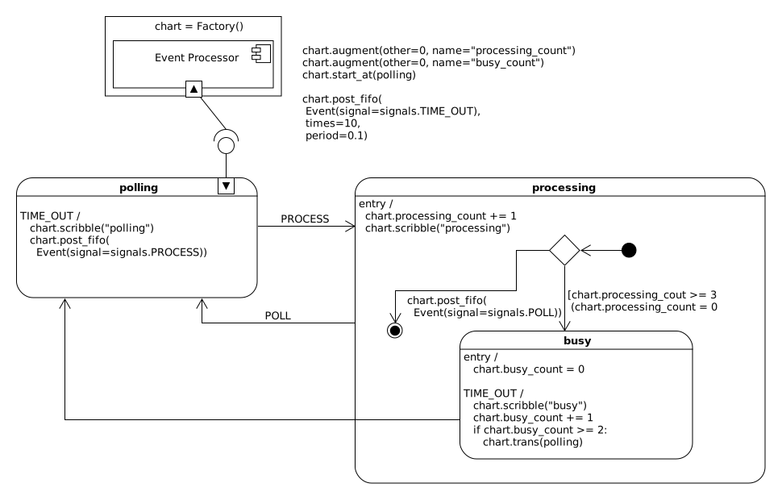This introduces a new glyph called the final state:

When you see this glyph on a diagram it means, stop running. So:
Would look like this as code:
def processing_init(chart, e):
status = return_status.HANDLED
if chart.processing_count >= 3: # Square brackets on diagram.
chart.processing_count = 0
status = chart.trans(busy) # HEAVY-DUTY Harel Formalism run here.
# This is recursive and might take
# a while before this
# routine finishes.
else:
# If 'POLL' signal wasn't invented before invent it now.
# We post it to ourselves so we can react to it in the next rtc.
chart.post_fifo(
Event(signal=signals.POLL))
return status
Ok now that we have that all out of the way let’s start fresh, reconsidering our specification and our proposed design, then implement it in code:
Part of the system will poll a sensor based on a system clock running with a period of 100ms.
Once polled this information will be sent to some processing code.
After three such events, the system will perform some processing and it will enter a busy state (maybe communicating with a server).
While the unit is in a busy state it should not poll the sensor or process input.
After the busy process is completed the system should go back into it’s polling mode.
Here is the code for this design with highlights for the artificial events:
import time
from miros import pp
from miros import Factory
from miros import signals, Event, return_status
def polling_time_out(chart, e):
chart.scribble("polling")
chart.post_fifo(
Event(signal=signals.PROCESS))
return return_status.HANDLED
def polling_process(chart, e):
return chart.trans(processing)
def processing_entry(chart, e):
chart.processing_count += 1
chart.scribble("processing")
return return_status.HANDLED
def processing_init(chart, e):
status = return_status.HANDLED
if chart.processing_count >= 3:
chart.processing_count = 0
status = chart.trans(busy)
else:
chart.post_fifo(
Event(signal=signals.POLL))
return status
def processing_poll(chart, e):
return chart.trans(polling)
def processing_exit(chart, e):
return return_status.HANDLED
def busy_entry(chart, e):
chart.busy_count = 0
return return_status.HANDLED
def busy_time_out(chart, e):
chart.scribble("busy")
chart.busy_count += 1
status = return_status.HANDLED
if chart.busy_count > 2:
status = chart.trans(polling)
return status
chart = Factory('reminder_pattern_needed_2')
chart.augment(other=0, name="processing_count")
chart.augment(other=0, name="busy_count")
polling = chart.create(state="polling"). \
catch(signal=signals.TIME_OUT, handler=polling_time_out). \
catch(signal=signals.PROCESS, handler=polling_process). \
to_method()
processing = chart.create(state="processing"). \
catch(signal=signals.ENTRY_SIGNAL, handler=processing_entry). \
catch(signal=signals.INIT_SIGNAL, handler=processing_init). \
catch(signal=signals.EXIT_SIGNAL, handler=processing_exit). \
catch(signal=signals.POLL, handler=processing_poll). \
to_method()
busy = chart.create(state="busy"). \
catch(signal=signals.ENTRY_SIGNAL, handler=busy_entry). \
catch(signal=signals.TIME_OUT, handler=busy_time_out). \
to_method()
chart.nest(polling, parent=None). \
nest(processing, parent=None). \
nest(busy, parent=processing)
chart.start_at(polling)
chart.post_fifo(Event(signal=signals.TIME_OUT), times=20, period=0.1)
time.sleep(1.0)
pp(chart.spy())
If we run this code, it will output 1 seconds worth of information. The comments in the spy log are the thoughts I would have while viewing it.
['START', # start_at code running
'SEARCH_FOR_SUPER_SIGNAL:polling', # Harel formalism search
'ENTRY_SIGNAL:polling', # Harel formalism
'INIT_SIGNAL:polling', # Harel formalism
'<- Queued:(0) Deferred:(0)', # start_at code completed
'TIME_OUT:polling', # time out event detected in polling
'polling', # result of chart.scribble("polling")
'POST_FIFO:PROCESS', # inventing and posting our artificial event
'TIME_OUT:polling:HOOK', # TIME_OUT was a hook, no state transition
'<- Queued:(1) Deferred:(0)', # rtc completed (event waiting)
'PROCESS:polling', # PROCESS event detected in polling
'SEARCH_FOR_SUPER_SIGNAL:processing', # Harel formalism search
'SEARCH_FOR_SUPER_SIGNAL:polling', # Harel formalism search
'EXIT_SIGNAL:polling', # Harel formalism
'ENTRY_SIGNAL:processing', # Harel formalism
'processing', # result of chart.scribble("processing")
'INIT_SIGNAL:processing', # Harel formalism
'POST_FIFO:POLL', # chart.post_fifo(Event(signal=signals.POLL))
'<- Queued:(1) Deferred:(0)', # rtc completed (event waiting)
'POLL:processing', # polling state detected POLL event
'SEARCH_FOR_SUPER_SIGNAL:polling', # Harel formalism search
'SEARCH_FOR_SUPER_SIGNAL:processing', # Harel formalism search
'EXIT_SIGNAL:processing', # Harel formalism
'ENTRY_SIGNAL:polling', # Harel formalism
'INIT_SIGNAL:polling', # Harel formalism
'<- Queued:(0) Deferred:(0)', #rtc complete (no events waiting)
'TIME_OUT:polling', # second TIME_OUT event cycle described above
'polling',
'POST_FIFO:PROCESS',
'TIME_OUT:polling:HOOK',
'<- Queued:(1) Deferred:(0)',
'PROCESS:polling',
'SEARCH_FOR_SUPER_SIGNAL:processing',
'SEARCH_FOR_SUPER_SIGNAL:polling',
'EXIT_SIGNAL:polling',
'ENTRY_SIGNAL:processing',
'processing',
'INIT_SIGNAL:processing',
'POST_FIFO:POLL',
'<- Queued:(1) Deferred:(0)',
'POLL:processing',
'SEARCH_FOR_SUPER_SIGNAL:polling',
'SEARCH_FOR_SUPER_SIGNAL:processing',
'EXIT_SIGNAL:processing',
'ENTRY_SIGNAL:polling',
'INIT_SIGNAL:polling',
'<- Queued:(0) Deferred:(0)',
'TIME_OUT:polling', # third TIME_OUT event expecting something different now
'polling', # result of chart.scribble("polling")
'POST_FIFO:PROCESS', # inventing and posting our artificial event
'TIME_OUT:polling:HOOK', # TIME_OUT was a hook, no state transition
'<- Queued:(1) Deferred:(0)', # rtc completed (event waiting)
'PROCESS:polling', # PROCESS event detected in polling
'SEARCH_FOR_SUPER_SIGNAL:processing', # Harel formalism search
'SEARCH_FOR_SUPER_SIGNAL:polling', # Harel formalism search
'EXIT_SIGNAL:polling', # Harel formalism
'ENTRY_SIGNAL:processing', # Harel formalism
'processing', # result of chart.scribble("processing")
'INIT_SIGNAL:processing', # Harel formalism
'SEARCH_FOR_SUPER_SIGNAL:busy', # Harel formalism search
'ENTRY_SIGNAL:busy', # Harel formalism
'INIT_SIGNAL:busy', # Harel formalism
'<- Queued:(0) Deferred:(0)', # rtc completed
'TIME_OUT:busy', # busy state detect it's first TIME_OUT
'busy', # chart.scribble("busy")
'TIME_OUT:busy:HOOK', # busy state hooks it and blocks it from leaving
'<- Queued:(0) Deferred:(0)', # rtc completed
'TIME_OUT:busy', # busy state detects it's second TIME_OUT
'busy', # chart.scribble("busy")
'SEARCH_FOR_SUPER_SIGNAL:polling', # Harel formalism search
'SEARCH_FOR_SUPER_SIGNAL:busy', # Harel formalism search
'EXIT_SIGNAL:busy', # Harel formalism
'EXIT_SIGNAL:processing', # Harel formalism
'SEARCH_FOR_SUPER_SIGNAL:processing', # Harel formalism search
'ENTRY_SIGNAL:polling', # Harel formalism
'INIT_SIGNAL:polling', # Harel formalism
'<- Queued:(0) Deferred:(0)', # rtc completed
'TIME_OUT:polling', # full circuit completed DESIGN CONFIRMED
# deleting the rest of the log from documentation
The code works and we have met our specifications.
But the polling and the processing state are strongly coupled to the TIME_OUT signal. Our design of having the TIME_OUT start the system in the polling and end up in the processing/busy state cost us a lot of CPU time.
Lets introduce the reminder pattern with a new design:
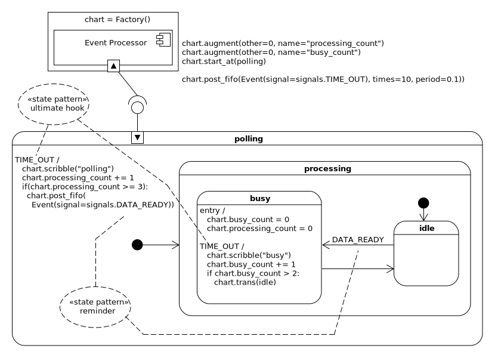Let’s discuss this diagram.
We use INIT_SIGNAL events to climb into the idle state.
We create a TIME_OUT ultimate hook, which is a method that can be used by any state within the statechart. This ultimate hook counts up each time it sees a TIME_OUT and once this count hits 3 it posts an artificial event with the signal DATA_READY.
Once the RTC process is completed, idle will catch the DATA_READY signal and transition into busy. The busy state catches the TIME_OUT event which means that it will not escape to the ultimate hook in polling. Instead it uses it to count up a busy_count and when it hits 2 it will transition back into idle.
Now, let’s write the code:
import time
from miros import pp
from miros import Factory
from miros import signals, Event, return_status
def polling_time_out_hook(chart, e):
'''generic TIME_OUT ultimate hook for all states,
injects artificial event DATA_READY'''
chart.scribble("polling")
chart.processing_count += 1
if(chart.processing_count >= 3):
chart.post_fifo(Event(signal=signals.DATA_READY))
return return_status.HANDLED
def polling_init(chart, e):
return chart.trans(processing)
def processing_init(chart, e):
return chart.trans(idle)
def idle_data_ready(chart, e):
return chart.trans(busy)
def busy_entry(chart, e):
chart.busy_count, chart.busy_count = 0, 0
return return_status.HANDLED
def busy_time_out_hook(chart, e):
'''specific TIME_OUT hook for busy state'''
status = return_status.HANDLED
chart.scribble("busy")
chart.busy_count += 1
if(chart.busy_count >= 2):
status = chart.trans(idle)
return status
chart = Factory('reminder')
chart.augment(other=0, name="processing_count")
chart.augment(other=0, name="busy_count")
polling = chart.create(state="polling"). \
catch(signal=signals.INIT_SIGNAL, handler=polling_init). \
catch(signal=signals.TIME_OUT, handler=polling_time_out_hook). \
to_method()
processing = chart.create(state="processing"). \
catch(signal=signals.INIT_SIGNAL, handler=processing_init). \
to_method()
idle = chart.create(state="idle"). \
catch(signal=signals.DATA_READY, handler=idle_data_ready). \
to_method()
busy = chart.create(state="busy"). \
catch(signal=signals.ENTRY_SIGNAL, handler=busy_entry). \
catch(signal=signals.TIME_OUT, handler=busy_time_out_hook). \
to_method()
chart.nest(polling, parent=None). \
nest(processing, parent=polling). \
nest(idle, parent=processing). \
nest(busy, parent=polling)
chart.start_at(polling)
chart.post_fifo(Event(signal=signals.TIME_OUT), times=20, period=0.1)
time.sleep(1.0)
pp(chart.spy())
If we run the code and looked at the spy log it would look like this: (I have marked it up with comments)
['START', # start_at code running
'SEARCH_FOR_SUPER_SIGNAL:polling', # Harel formalism search
'ENTRY_SIGNAL:polling', # Harel formalism
'INIT_SIGNAL:polling', # Harel formalism
'SEARCH_FOR_SUPER_SIGNAL:processing', # Harel formalism search
'ENTRY_SIGNAL:processing', # Harel formalism
'INIT_SIGNAL:processing', # Harel formalism
'SEARCH_FOR_SUPER_SIGNAL:idle', # Harel formalism search
'ENTRY_SIGNAL:idle', # Harel formalism
'INIT_SIGNAL:idle', # Harel formalism
'<- Queued:(0) Deferred:(0)', # rtc completed
'TIME_OUT:idle', # TIME_OUT detected in idle
'TIME_OUT:processing', # TIME_OUT passed out to processing
'TIME_OUT:polling', # TIME_OUT passed to polling
'polling', # chart.scribble("polling")
'TIME_OUT:polling:HOOK', # TIME_OUT hooked by the polling
'<- Queued:(0) Deferred:(0)', # rtc completed
'TIME_OUT:idle', # Second TIME_OUT circuit - dynamics same as above
'TIME_OUT:processing',
'TIME_OUT:polling',
'polling',
'TIME_OUT:polling:HOOK',
'<- Queued:(0) Deferred:(0)',
'TIME_OUT:idle', # Third TIME_OUT event
'TIME_OUT:processing',
'TIME_OUT:polling',
'polling',
'POST_FIFO:DATA_READY', # Posting the artificial event to the chart
'TIME_OUT:polling:HOOK', # TIME_OUT hooked by pooling
'<- Queued:(1) Deferred:(0)', # rtc completed with 1 item in queue
'DATA_READY:idle', # DATA_READY seen by idle state
'SEARCH_FOR_SUPER_SIGNAL:busy', # Harel formalism search
'SEARCH_FOR_SUPER_SIGNAL:idle', # Harel formalism search
'SEARCH_FOR_SUPER_SIGNAL:polling', # Harel formalism search
'EXIT_SIGNAL:idle', # Harel formalism
'EXIT_SIGNAL:processing', # Harel formalism
'ENTRY_SIGNAL:busy', # Harel formalism (busy_entry call run)
'INIT_SIGNAL:busy', # Harel formalism
'<- Queued:(0) Deferred:(0)', # rtc completed
'TIME_OUT:busy', # busy sees TIME_OUT event
'busy', # chart.scribble("busy")
'TIME_OUT:busy:HOOK', # busy hooks TIME_OUT event
'<- Queued:(0) Deferred:(0)', # rtc completed
'TIME_OUT:busy', # second TIME_OUT event seen by busy
'busy', # chart.scribble("busy")
'SEARCH_FOR_SUPER_SIGNAL:idle', # this started by return chart.trans(idle)
'SEARCH_FOR_SUPER_SIGNAL:busy', # Harel formalism search
'SEARCH_FOR_SUPER_SIGNAL:processing', # Harel formalism search
'SEARCH_FOR_SUPER_SIGNAL:polling', # Harel formalism search
'EXIT_SIGNAL:busy', # Harel formalism
'ENTRY_SIGNAL:processing', # Harel formalism
'ENTRY_SIGNAL:idle', # Harel formalism
'INIT_SIGNAL:idle', # Harel formalism
'<- Queued:(0) Deferred:(0)' # rtc completed .. full circuit demonstrated
.
.
]
This design required a lot less CPU time. This is especially important if you are going to port your design to an embedded system. If you are using Python in production you will be much less concerned with performance (since you are using Python), even so, it is still a better design.
Note
If you were to use the trace you might be surprised that the hooked code is hidden from view.
print(chart.trace())
[2017-12-14 06:49:22.157806] [reminder] e->start_at() top->idle
[2017-12-14 06:49:22.461012] [reminder] e->DATA_READY() idle->busy
[2017-12-14 06:49:22.661728] [reminder] e->TIME_OUT() busy->idle
[2017-12-14 06:49:22.763392] [reminder] e->DATA_READY() idle->busy
[2017-12-14 06:49:22.963635] [reminder] e->TIME_OUT() busy->idle
[2017-12-14 06:49:23.064705] [reminder] e->DATA_READY() idle->busy
This is because the trace will only track items which cause state transitions and hooks do not cause state transitions.
Deferred Event#
- Formal description:
“Simplify state machines by modifying the sequencing of events” 7
In reactive systems events come in bursts. They come whenever they come with no regard for the current state of your statechart.
Suppose you were building a bank machine where the receiving and authorization stages involved some complex computing. To interrupt these states to deal with an inconveniently timed request would be difficult to program.
Instead of coming up with some complicated scheme for shelving our work to process new requests, we just defer the event, then re-inject the event into our statechart when its timing is more convenient.
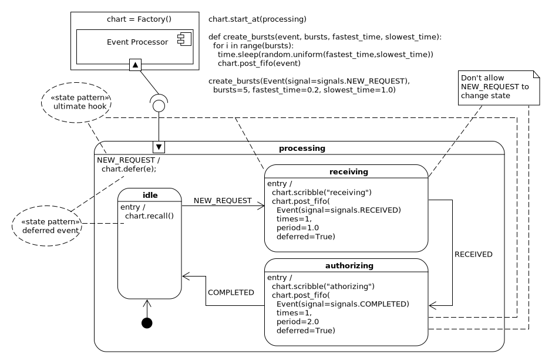Here is an example of a chart using the deferred event pattern.
To begin with the chart climbs into the idle state. Upon receiving its first NEW_REQUEST it transitions into the receiving state. After a second of processing it transitions into the authorizing state. After the authorizing state processes for 2 seconds it transitions back to the idle state.
The reminder pattern occurs when a NEW_REQUEST event is seen while the system is either in receiving or authorizing. This NEW_REQUEST event is ignored by these states and caught by the hook in processing. The processing state places this NEW_REQUEST event into the deferred queue then passes the program’s control back into whichever state was currently active.
The idle state behaves differently, upon entering, it recalls any events that were placed in the deferred queue. This effectively transfers them into the active object working queue and for all intents and purposes the statechart will think that this event was just posted to it from the outside world. In the next RTC the idle state will react to the posted NEW_REQUEST by transitioning into the receiving state and the cycle will continue.
Now that you have a high level view of how things are working I will talk about timing. The receiving and authorizing states are simulating difficultly by using one shot events. We are pretending that instead of just waiting around for a one shot to fire, that instead, something really important is happening in the background which we do not want to interrupt.
The event bursts, use to interrupt our chart, will be done with the
create_bursts function seen on the diagram. All this function does is to
waste a random amount of time between a few NEW_REQUEST events so that we can
see how are chart reacts.
We will use both the trace and spy instrumentation to look at our timing. The trace outputs timing information for state transitions. So we will use the trace to see if our chart state transitions remains steady despite the chaos we are sending at it. To confirm that we aren’t just fooling ourselves we will use the spy and scribble when timed events hit the chart.
Now let’s redraw the diagram and then write it’s code:
import random
import time
from datetime import datetime
from miros import pp
from miros import Factory
from miros import signals, Event, return_status
def processing_entry(chart, e):
chart.defer(e)
chart.scribble("deferred at {}". \
format(datetime.now().strftime("%M:%S:%f")))
return return_status.HANDLED
def processing_init(chart, e):
return chart.trans(idle)
def idle_entry(chart, e):
chart.recall()
chart.scribble("recalled at {}". \
format(datetime.now().strftime("%M:%S:%f")))
return return_status.HANDLED
def idle_new_request(chart, e):
return chart.trans(receiving)
def receiving_entry(chart, e):
chart.scribble("receiving")
chart.post_fifo(
Event(signal=signals.RECEIVED),
times=1,
period=1.0,
deferred=True)
return return_status.HANDLED
def receiving_received(chart, e):
return chart.trans(authorizing)
def authorizing_entry(chart, e):
chart.scribble("authorizing")
chart.post_fifo(
Event(signal=signals.COMPLETED),
times=1,
period=2.0,
deferred=True)
return return_status.HANDLED
def authorizing_authorized(chart, e):
return chart.trans(idle)
chart = Factory('deferred')
processing = chart.create(state="processing"). \
catch(signal=signals.NEW_REQUEST, handler=processing_entry). \
catch(signal=signals.INIT_SIGNAL, handler=processing_init). \
to_method()
idle = chart.create(state='idle'). \
catch(signal=signals.ENTRY_SIGNAL, handler=idle_entry). \
catch(signal=signals.NEW_REQUEST, handler=idle_new_request). \
to_method()
receiving = chart.create(state='receiving'). \
catch(signal=signals.ENTRY_SIGNAL, handler=receiving_entry). \
catch(signal=signals.RECEIVED, handler=receiving_received). \
to_method()
authorizing = chart.create(state='authorizing'). \
catch(signal=signals.ENTRY_SIGNAL,
handler=authorizing_entry). \
catch(signal=signals.COMPLETED,
handler=authorizing_authorized). \
to_method()
chart.nest(processing, parent=None). \
nest(idle, parent=processing). \
nest(receiving, parent=processing). \
nest(authorizing, parent=processing)
chart.start_at(processing)
def burst_event(event, bursts, fastest_time, slowest_time):
for i range(bursts):
time.sleep(random.uniform(fastest_time,slowest_time))
chart.post_fifo(event)
burst_event(Event(signal=signals.NEW_REQUEST),
bursts=5,
fastest_time=0.2,
slowest_time=1.0)
print(chart.trace())
time.sleep(6)
pp(chart.spy())
I have highlighted the code that I excluded from the diagram. It is code that will put timing information into the spy log.
When we run this test, it could take between 7 and 11 seconds. The trace and spy results I get will be different from what you get because of the stochastic characteristics of when the events are posted to the statechart.
Let’s first look at the trace output and confirm that our statechart behaves as we intended:
[2017-12-15 09:20:49.465806] [deferred] e->start_at() top->idle
[2017-12-15 09:20:50.435495] [deferred] e->NEW_REQUEST() idle->receiving
[2017-12-15 09:20:51.451824] [deferred] e->RECEIVED() receiving->authorizing
[2017-12-15 09:20:53.458799] [deferred] e->COMPLETED() authorizing->idle
[2017-12-15 09:20:53.459805] [deferred] e->NEW_REQUEST() idle->receiving
[2017-12-15 09:20:54.461726] [deferred] e->RECEIVED() receiving->authorizing
[2017-12-15 09:20:56.463891] [deferred] e->COMPLETED() authorizing->idle
[2017-12-15 09:20:56.464915] [deferred] e->NEW_REQUEST() idle->receiving
[2017-12-15 09:20:57.466761] [deferred] e->RECEIVED() receiving->authorizing
[2017-12-15 09:20:59.468877] [deferred] e->COMPLETED() authorizing->idle
[2017-12-15 09:20:59.469876] [deferred] e->NEW_REQUEST() idle->receiving
The received state takes about 1 second to complete, so we are expecting to see that the time between a NEW_REQUEST and a RECEIVED event should be about 1 second. From inspection on lines 2-3, 5-6, 8-9 we see this is true:
1 2 3 4 5 6 7 8 9 10 11 | .
[2017-12-15 09:20:50.435495] [deferred] e->NEW_REQUEST() idle->receiving
[2017-12-15 09:20:51.451824] [deferred] e->RECEIVED() receiving->authorizing
.
[2017-12-15 09:20:53.459805] [deferred] e->NEW_REQUEST() idle->receiving
[2017-12-15 09:20:54.461726] [deferred] e->RECEIVED() receiving->authorizing
.
[2017-12-15 09:20:56.464915] [deferred] e->NEW_REQUEST() idle->receiving
[2017-12-15 09:20:57.466761] [deferred] e->RECEIVED() receiving->authorizing
.
.
|
The authorizing state takes about 2 seconds to complete so the RECEIVED and COMPLETED events should be about 2 seconds apart. From the inspection of lines 3-4, 6-7 and 9-10 we see this is true.
1 2 3 4 5 6 7 8 9 10 11 | .
.
[2017-12-15 09:20:51.451824] [deferred] e->RECEIVED() receiving->authorizing
[2017-12-15 09:20:53.458799] [deferred] e->COMPLETED() authorizing->idle
.
[2017-12-15 09:20:54.461726] [deferred] e->RECEIVED() receiving->authorizing
[2017-12-15 09:20:56.463891] [deferred] e->COMPLETED() authorizing->idle
.
[2017-12-15 09:20:57.466761] [deferred] e->RECEIVED() receiving->authorizing
[2017-12-15 09:20:59.468877] [deferred] e->COMPLETED() authorizing->idle
.
|
The deferred event pattern states that we will react to the recalled events immediately and we can see this behavior on lines 4-5 and 8-9
1 2 3 4 5 6 7 8 9 10 11 | .
.
.
[2017-12-15 09:20:53.458799] [deferred] e->COMPLETED() authorizing->idle
[2017-12-15 09:20:53.459805] [deferred] e->NEW_REQUEST() idle->receiving
.
[2017-12-15 09:20:56.463891] [deferred] e->COMPLETED() authorizing->idle
[2017-12-15 09:20:56.464915] [deferred] e->NEW_REQUEST() idle->receiving
.
.
.
|
Now we have to confirm that NEW_REQUEST events were sent at random times and deferred by the chart. To do this we will have to dig into the spy log. To make it easier to see I will put spaces after the RTC event and I will highlight the moments when a NEW_REQUEST was seen and defered by the chart:
['START',
'SEARCH_FOR_SUPER_SIGNAL:processing',
'ENTRY_SIGNAL:processing',
'INIT_SIGNAL:processing',
'SEARCH_FOR_SUPER_SIGNAL:idle',
'ENTRY_SIGNAL:idle',
'recalled at 20:49:465806',
'INIT_SIGNAL:idle',
'<- Queued:(0) Deferred:(0)',
'NEW_REQUEST:idle',
'SEARCH_FOR_SUPER_SIGNAL:receiving',
'SEARCH_FOR_SUPER_SIGNAL:idle',
'EXIT_SIGNAL:idle',
'ENTRY_SIGNAL:receiving',
'receiving',
'INIT_SIGNAL:receiving',
'<- Queued:(0) Deferred:(0)',
'NEW_REQUEST:receiving',
'NEW_REQUEST:processing',
'POST_DEFERRED:NEW_REQUEST',
'deferred at 20:51:020281',
'NEW_REQUEST:processing:HOOK',
'<- Queued:(0) Deferred:(1)',
'RECEIVED:receiving',
'SEARCH_FOR_SUPER_SIGNAL:authorizing',
'SEARCH_FOR_SUPER_SIGNAL:receiving',
'EXIT_SIGNAL:receiving',
'ENTRY_SIGNAL:authorizing',
'authorizing',
'INIT_SIGNAL:authorizing',
'<- Queued:(0) Deferred:(1)',
'NEW_REQUEST:authorizing',
'NEW_REQUEST:processing',
'POST_DEFERRED:NEW_REQUEST',
'deferred at 20:51:664940',
'NEW_REQUEST:processing:HOOK',
'<- Queued:(0) Deferred:(2)',
'NEW_REQUEST:authorizing',
'NEW_REQUEST:processing',
'POST_DEFERRED:NEW_REQUEST',
'deferred at 20:52:219593',
'NEW_REQUEST:processing:HOOK',
'<- Queued:(0) Deferred:(3)',
'NEW_REQUEST:authorizing',
'NEW_REQUEST:processing',
'POST_DEFERRED:NEW_REQUEST',
'deferred at 20:53:219562',
'NEW_REQUEST:processing:HOOK',
'<- Queued:(0) Deferred:(4)',
'COMPLETED:authorizing',
'SEARCH_FOR_SUPER_SIGNAL:idle',
'SEARCH_FOR_SUPER_SIGNAL:authorizing',
'EXIT_SIGNAL:authorizing',
'ENTRY_SIGNAL:idle',
'RECALL:NEW_REQUEST',
'POST_FIFO:NEW_REQUEST',
'recalled at 20:53:459805',
'INIT_SIGNAL:idle',
'<- Queued:(1) Deferred:(3)',
.
.
.
'INIT_SIGNAL:receiving',
'<- Queued:(0) Deferred:(9)']
From the highlighted time stamps we see that these event injections were sporatic; so it is safe to assume the design worked.
It turns out the design is a lot easier to explain and write than it is to
verify. You might be wondering what happens if more items are posted than
there are slots in the deferred queue. The deferred queue is a deque, which
means it is a kind of ring buffer. It you overflow it, it will remove the
oldest item and push the newest item onto the tail end of the queue. It has a
queue size of 500.
Note
The spy log does not contain timing information. To add timing information to the
spy only takes a little effort; use the scribble method with a
datetime.now() call.
Orthogonal Component#
- Formal description:
“Use state machines as components.”
In the original statechart paper written by David Harel he describes how his formalism needs to capture requirements like “[The] gearbox change of state is independent of [the] braking system”. For this he invented something called a ‘orthogonal region’:
The two different areas in the above chart separated by the dotted line are orthogonal regions. They represent two separate state machines that act independent of one another but are both turned on when the truck state is initiated.
This part of the Harel Formalism is not directly supported by the Miro Samek event processing algorithm.
Note
If you would like to see how to map the orthogonal region pattern onto the miros-supported orthgonal component pattern, see the orthogonal regions example.
If you would like such a structure in your machine, you could use an orthogonal component instead. An orthogonal component is just a statechart that can dispatch messages directly into another one. I’ll explain this with an example.
Imagine we are asked to build some software for the general fusion reactor:
“The General Fusion’s Magnetized Target Fusion system uses a sphere filled with molten lead-lithium that is pumped to form a vortex. A pulse of magnetically-confined plasma fuel is then injected into the vortex. Around the sphere, an array of pistons drive a pressure wave into the centre of the sphere, compressing the plasma to fusion conditions. This process is then repeated, while the heat from the reaction is captured in the liquid metal and used to generate electricity via a steam turbine.” – General Fusion
Let’s say we have to write the firing mechanism to cause all of the pistons to initiate the pressure wave.
Imagine that each piston has two transducers that measure the relevant conditions of the molten lead-lithium near its position on the sphere. The first transducer provides a composite reading that abstracts away a lot of the physics; it provides numbers between 0 and 100. The second transducer measures the temperature; it’s range is 0 to 9000 degrees Celsius. A piston can only fire after 1 second has passed since the last firing event and once it passes this time threshold it would like to fire as soon as possible so that the fusion reactor can output the maximum amount of power.
There are 255 pistons.
Through a lot of trial and error it has been found a piston can fire in the following situations:
Composite Transducer Reading |
Temperature Transducer [degrees Celsius] |
|---|---|
0-20 |
50-100 |
25-50 |
200-333 |
30-66 |
403-600 |
70-100 |
670-1500 |
All of the pistons have to fire at the same time and they can only fire if the above criteria are met.
Let’s design the system. First we will need to fake-out the temperature and composite transducer readings. This can be done with an infinite impulse response filter and a random number generator using a uniform distribution.
class FakeNewsSpec:
''' provides the following syntax:
spec.initial_value
spec.aggression
spec.minimum
spec.maximum
'''
def __init__(self,
aggression=0,
initial_value=None,
minimum=None,
maximum=None):
if minimum is None:
assert(0)
if maximum is None:
assert(0)
if minimum >= maximum:
assert(0)
if initial_value is None:
initial_value = (maximum - minimum) / 2.0
elif initial_value < minimum:
initial_value = minimum
elif initial_value > maximum:
initial_value = maximum
self.initial_value = initial_value
self.aggression = aggression
self.minimum = minimum
self.maximum = maximum
def fake_news(spec):
'''
# aggression ranges from 1 to 100. 1 is the least aggressive and 100 is
# the most agressive
fn = fake_news(
FakeNewsSpec(
minimum=0,
maximum=100,
initial_value=45,
aggression=50))
for i in range(5):
print(fn())
# 70.40052265431565
# 98.55643192543394
# 63.607687838082626
# 96.33858152348765
# 47.2780049249278
'''
AGGRESSION_MAX = 100
'''returns a function that will generate the kind of fake news specified'''
import random
random.seed()
if 1 <= spec.aggression <= AGGRESSION_MAX:
aggression = spec.aggression
elif spec.aggression < 1:
aggression = 1
else:
aggression = AGGRESSION_MAX
def _fake_news_generator():
'''provides an infinite set of number within the spec'''
current_number = spec.initial_value
while(True):
random_number = random.uniform(spec.minimum, spec.maximum)
# IIR (infinite impulse response)
current_number = ((aggression * random_number +
(AGGRESSION_MAX - aggression) *
current_number)) / AGGRESSION_MAX
yield current_number
def _fake_news():
'''just hides the next syntax'''
return next(_fake_news_generator())
return _fake_news
Ok, let’s try it out:
fake_transducer = fake_news(
FakeNewsSpec(minimum=0, maximum=100,
initial_value=45, aggression=20))
for i in range(10):
print(fake_transducer())
# 39.41035307935898
# 51.639646042274904
# 53.30613755950629
We see we can make the numbers swing around and the function is tunable. Good enough (you could probably find something much better in numpy), pushing on.
As Michel Laberge builds up his prototype reactor he will change the piston firing specification a lot.
So we have to make sure it’s easy to change. We will create a is-this-piston-ready method then we can inject it into our design. For now we define it as this:
def is_this_piston_ready(piston):
comp = piston.get_composite_reading()
temp = piston.get_temperature_reading()
if 0 <= comp <= 20 and 50 <= temp <= 100:
ready = True
elif 25 <= comp <= 50 and 200 <= temp <= 333:
ready = True
elif 30 <= comp <= 66 and 403 <= temp <= 600:
ready = True
elif 70 <= comp <= 100 and 670 <= temp <= 1500:
ready = True
else:
ready = False
return ready
Here is the high level UML class diagram for our approach:
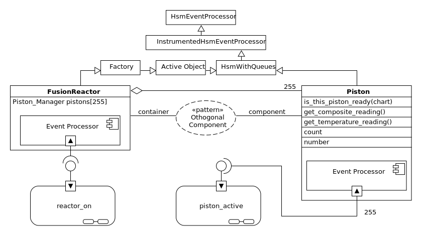The FusionReactor class will be a subclass of the Factory. It will aggregate 255 objects of the Piston class. The FusionReactor object will connect to the reactor_on state machine and each of the piston objects will use the same piston_active state machine.
The Piston class will be a subclass of HsmWithQueues, which means it will not have it’s own thread. Threads are only constructed in the ActiveObject class or any of it’s descendants. The orthogonal component pattern will allow a single thread to be shared between many different state machines. This will be described in more detail shortly.
The Piston objects will each contain their own event dispatcher, their own event queues; but they will all reference the same piston_manager state machine.
We are going to use the polyamorous nature of state methods to implement the 255 pistons. Instead of having a separate piston_active HSMs defined for each of the 255 active objects we will instead define just one HSM and share it between all of them. (saving on memory)
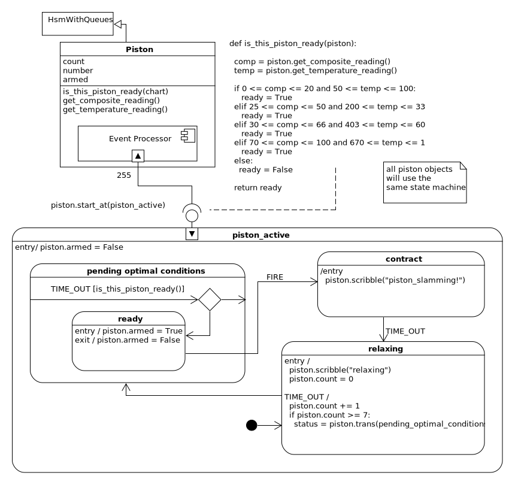Let’s start writing the code. Here is the Piston Class:
class Piston(HsmWithQueues):
def __init__(self,
get_composite_reading,
get_temperature_reading,
is_this_piston_ready,
number):
super().__init__()
self.is_this_piston_ready = is_this_piston_ready
self.get_composite_reading = get_composite_reading
self.get_temperature_reading = get_temperature_reading
self.number = number
self.count = 0
self.armed = False
self.name = "piston_"+str(self.number)
The highlights were made to show that it is easy to inject different types of functions to generate the transducer readings and the piston-ready criterion.
Now let’s write the piston state machine:
# This is the piston's HSM, it will be shared by all pistons
@spy_on
def piston_ready(piston, e):
status = return_status.UNHANDLED
if(e.signal == signals.ENTRY_SIGNAL):
piston.armed = False
status = return_status.HANDLED
elif(e.signal == signals.INIT_SIGNAL):
status = piston.trans(relaxing)
else:
status, piston.temp.fun = return_status.SUPER, piston.top
return status
@spy_on
def relaxing(piston, e):
status = return_status.UNHANDLED
if(e.signal == signals.ENTRY_SIGNAL):
piston.scribble("relaxing")
elif(e.signal == signals.TIME_OUT):
status = return_status.HANDLED
piston.count += 1
if piston.count >= 7:
piston.count = 0
status = piston.trans(priming)
elif(e.signal == signals.PRIMING):
return piston.trans(priming)
else:
status, piston.temp.fun = return_status.SUPER, piston_ready
return status
@spy_on
def triggered(piston, e):
status = return_status.UNHANDLED
if(e.signal == signals.ENTRY_SIGNAL):
piston.scribble("piston_slamming! at {}". \
format(datetime.now().strftime("%M:%S:%f")))
elif(e.signal == signals.TIME_OUT):
status = piston.trans(relaxing)
else:
status, piston.temp.fun = return_status.SUPER, piston_ready
return status
@spy_on
def priming(piston, e):
status = return_status.UNHANDLED
if(e.signal == signals.TIME_OUT):
status = return_status.HANDLED
if piston.is_this_piston_ready(piston):
status = piston.trans(ready)
else:
status, piston.temp.fun = return_status.SUPER, piston_ready
return status
@spy_on
def ready(piston, e):
status = return_status.UNHANDLED
if(e.signal == signals.ENTRY_SIGNAL):
piston.armed = True
status = return_status.HANDLED
elif(e.signal == signals.FIRE):
status = piston.trans(triggered)
elif(e.signal == signals.TIME_OUT):
status = return_status.HANDLED
elif(e.signal == signals.EXIT_SIGNAL):
piston.armed = False
status = return_status.HANDLED
else:
status, piston.temp.fun = return_status.SUPER, priming
return status
The first thing we notice about this code, is that it uses the flat way of writing state methods.
This is because we want this HSM to be shared between multiple Piston objects. A state machine build up using a factory cannot be shared; it belongs to the thing that built it. This is in contrast with flat state methods, they are defined outside of the event processors that will use them. So they can be used over and over again if they describe behavior that wants to be shared.
In our system we are going to have 255 pistons that all want the same type of behavior. The internal variables for tracking counts and if that piston is armed will be kept within the piston objects, not in the HSM that it is using to define it’s operational state. Never store your extended state variables in a flat state method.
The highlighted code marks the location of the TIME_OUT and FIRE
signals. This signal will be injected into this state machine
using the dispatch method of the FusionReactor object (this is the essence
of the orthogonal component pattern). We will talk more about
that shortly.
We want to build 255 pistons with a tunable is_this_piston_ready method.
Furthermore, we want to be able to switch out our fake transducer readings with
real functions from the reactor. To make it easy to change these things I
define a build_piston function.
# A function for building pistons
def build_piston(number, starting_state):
# We would change the get_composite_reading and get_temperature_reading
# with the actual functions that would return these values in production
piston = Piston(
get_composite_reading=fake_news(
FakeNewsSpec(
minimum=0,
maximum=100,
initial_value=89,
aggression=21)),
get_temperature_reading=fake_news(
FakeNewsSpec(
minimum=0,
maximum=1500,
initial_value=798,
aggression=16)),
is_this_piston_ready=is_this_piston_ready,
number=number
)
piston.start_at(starting_state)
return piston
This function builds a fusion piston and starts it in whichever state we like. It will be changed before we actually turn on the reactor. We will remove the fake_news calls with actual functions that return readings from our composite and temperature transducers. For now, it will let us test and tune our design.
Now that we can build and run a piston, let’s design the FusionReactor class that it belongs to:
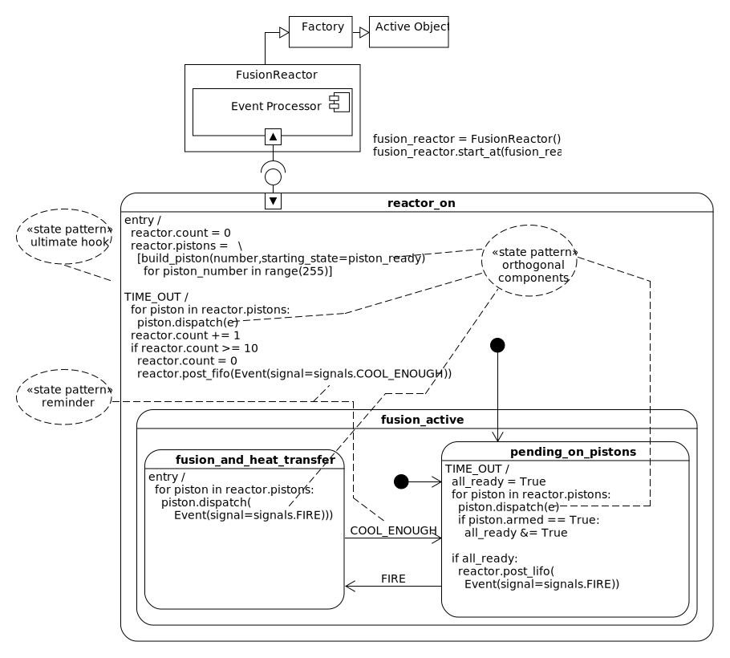From a high level, the FusionReactor is a subclass of the Factory which means it has a thread and it can use the factory syntax to build up its HSM. Since there will be only one reactor with 255 pistons, we have it build the 255 pistons when it enters the reactor_on state. The pistons are stored in an extended state variable in the reactor object. This adds convenient syntax for accessing an individual piston, or for iterating over all of them.
After constructing it’s pistons the reactor will climb into the pending_on_pistons state. This state captures the TIME_OUT event and iterates through all of the pistons, injecting each of them with the TIME_OUT event. To see how a fusion piston deals with a TIME_OUT we will look at it’s state chart:
So what happens with the first TIME_OUT event? We see from inspection that each of the pistons will start in the relaxing state. There is an assumption that when the fusion reactor is starting up, it lets its pistons relax into their firing positions.
So the first TIME_OUT event will be caught by a piston’s relaxing state. Each successive TIME_OUT, the piston.count is incremented and when it is high enough, the piston transitions into pending_optimal_conditions.
In the pending_optimal_conditions state, the piston uses each TIME_OUT pulse to
read its tranducers. From this reading it can determine if
the liquid metal on it’s part of the sphere has met the design criteria for a
piston strike. It does this by calling the is_this_piston_ready function
and transitioning into the ready state if the criteria are met, or by staying
in the pending_optimal_conditions if they aren’t.
This behavior is shared with the ready state: On each TIME_OUT event, the ready state can transition back into the pending_optimal_conditions if the strike conditions are no longer present; disarming the piston. When the ready state is entered the piston’s armed variable is set to True. When it is exited it is set to false. This is how information is shared with the fusion_reactor active object.
Before we talk about the fusion_reactor again, we will finish the piston cycle walk through. A piston can only FIRE from the ready state and it’s event is initiated from the fusion_reactor statechart. A FIRE event causes the piston to transition into the contract state and then the next TIME_OUT event will cause it to transition back into the relaxing state.
The piston behavior described above is shared by all of the fusion pistons. Now that we understand how they work let’s look at the fusion reactor again:
We were talking about the pending_on_pistons TIME_OUT event handler prior to looking at the piston behavior.
The orthogonal component pattern allows one active object to
manually dispatch events into another. This is done with the dispatch
method. Up until now we have dispatched events to our statecharts using the
post_fifo and post_lifo methods. These methods write their events into
a queue, which in turn wakes up a thread then causes that active object’s
HSM to run to completion.
The piston objects do not have their own threads, they share a thread with the
fusion_reactor object. To pump an event into a piston object’s HSM we call
it’s dispatch method with the event. This will cause it to link to it’s
HSM, run it to completion then return
control back to the fusion_reactor statechart.
The fusion_reactor thread can be thought of as a large gear, who’s rotational energy is coming from it’s thread. The pistons are little gears that are being powered by connecting with the large gear.
Getting back to our example we see that the pending_on_pistons states will only post a FIRE event when all of its pistons are ready. The FIRE event will cause a transition into the fusion_and_heat_transfer state, who’s entry condition will pump a FIRE event into all of the pistons. This will cause each of the pistons to contract and the fusion reaction will be initiated. A small star will shine into the liquid metal.
The fusion_and_heat_transfer state uses the reminder pattern to wait for 1 second prior to transitioning back into the pending_on_pistons state. Also notice the TIME_OUT event is pumped into each of the piston state machines by the TIME_OUT ultimate hook in the reactor_on class. This will allow each piston to relax while the heat is being transfered out of the liquid metal.
Now that we understand how the fusion reactor object works, let’s write it’s code:
# The fusion statechart callbacks
def reactor_on_entry(reactor, e):
status = return_status.HANDLED
reactor.count = 0
reactor.pistons = \
[build_piston(piston_number, starting_state=piston_ready)
for piston_number in range(255)]
return status
def reactor_on_time_out(reactor, e):
status = return_status.HANDLED
# provide a relaxing TIME_OUT pulse to each piston
for piston in reactor.pistons:
piston.dispatch(e)
reactor.count += 1
if reactor.count >= 10:
reactor.count = 0
reactor.post_fifo(
Event(signal=signals.COOL_ENOUGH))
return status
def reactor_on_init(reactor, e):
status = reactor.trans(energy_generation)
return status
def reactor_on_priming(reactor, e):
status = return_status.HANDLED
reactor.pistons[e.payload].dispatch(e)
return status
def energy_generation_init(reactor, e):
status = reactor.trans(pending_on_pistons)
return status
def fusion_active_entry(reactor, e):
status = return_status.HANDLED
for piston in reactor.pistons:
piston.dispatch(
Event(signal=signals.FIRE))
return status
def fusion_active_cool_enough(reactor, e):
status = reactor.trans(pending_on_pistons)
return status
def pending_on_pistons_timeout(reactor, e):
status = return_status.HANDLED
all_ready = True
for piston in reactor.pistons:
piston.dispatch(e)
all_ready &= piston.armed
if all_ready:
reactor.post_fifo(Event(signal=signals.FIRE))
status = return_status.HANDLED
return status
def fusion_and_heat_transfer_fire(reactor, e):
status = reactor.trans(fusion_and_heat_transfer)
return status
# Create a fusion reactor object and its HSM
fusion_reactor = FusionReactor("fusion_reactor")
fusion_active = \
fusion_reactor.create(state="fusion_active"). \
catch(signal=signals.ENTRY_SIGNAL,
handler=reactor_on_entry). \
catch(signal=signals.INIT_SIGNAL,
handler=reactor_on_init). \
catch(signal=signals.TIME_OUT,
handler=reactor_on_time_out). \
catch(signal=signals.PRIMING,
handler=reactor_on_priming). \
to_method()
energy_generation = \
fusion_reactor.create(state="energy_generation"). \
catch(signal=signals.INIT_SIGNAL,
handler=energy_generation_init). \
to_method()
fusion_and_heat_transfer = \
fusion_reactor.create(state="fusion_and_heat_transfer"). \
catch(signal=signals.ENTRY_SIGNAL,
handler=fusion_active_entry). \
catch(signal=signals.COOL_ENOUGH,
handler=fusion_active_cool_enough). \
to_method()
pending_on_pistons = \
fusion_reactor.create(state='pending_on_pistons'). \
catch(signal=signals.TIME_OUT,
handler=pending_on_pistons_timeout). \
catch(signal=signals.FIRE,
handler=fusion_and_heat_transfer_fire). \
to_method()
fusion_reactor.nest(fusion_active, parent=None). \
nest(energy_generation, parent=fusion_active). \
nest(fusion_and_heat_transfer, parent=energy_generation). \
nest(pending_on_pistons, parent=energy_generation)
fusion_reactor.start_at(fusion_active)
A big issue with this design is the timing. If you haven’t noticed already, a TIME_OUT event needs to have a period of 100 ms otherwise we might damage our fusion reactor. ;)
So here is some very important code:
fusion_reactor.post_fifo(Event(signal=signals.TIME_OUT),
times=21,
period=0.1,
deferred=False)
time.sleep(2.1)
print(fusion_reactor.trace())
# pp(fusion_reactor.pistons[0].spy())
# pp(fusion_reactor.pistons[1].spy())
print(fusion_reactor.pistons[1].trace())
We are going to post a TIME_OUT event every 100 ms, 21 times. This will run things long enough to see if we see two fusion cycles. Then we wait 2.1 seconds and then output the results:
This will output:
[2017-12-19 09:28:27.968188] [fusion_reactor] e->start_at() top->pending_on_pistons
[2017-12-19 09:28:28.736951] [fusion_reactor] e->FIRE() pending_on_pistons->fusion_and_heat_transfer
[2017-12-19 09:28:29.687615] [fusion_reactor] e->COOL_ENOUGH() fusion_and_heat_transfer->pending_on_pistons
[2017-12-19 09:28:29.787727] [fusion_reactor] e->FIRE() pending_on_pistons->fusion_and_heat_transfer
[2017-12-19 09:28:27.823549] [None] e->start_at() top->relaxing
[2017-12-19 09:28:28.571081] [None] e->TIME_OUT() relaxing->pending_optimal_conditions
[2017-12-19 09:28:28.672391] [None] e->TIME_OUT() pending_optimal_conditions->ready
[2017-12-19 09:28:28.737451] [None] e->FIRE() ready->triggered
[2017-12-19 09:28:28.775499] [None] e->TIME_OUT() triggered->relaxing
[2017-12-19 09:28:29.479119] [None] e->TIME_OUT() relaxing->pending_optimal_conditions
[2017-12-19 09:28:29.578757] [None] e->TIME_OUT() pending_optimal_conditions->ready
[2017-12-19 09:28:29.788228] [None] e->FIRE() ready->triggered
[2017-12-19 09:28:29.880259] [None] e->TIME_OUT() triggered->relaxing
Let’s run the first trace through sequence and compare it to its design diagram, then I’ll write some documentation that I would post to the General Fusion wiki so that other people could understand my code.
[ Chart: fusion_reactor ] (1)
top pending_on_pistons fusion_and_heat_transfer
+------start_at()------->| |
| (2) | |
| +--------FIRE()--------->|
| | (3) |
| +<----COOL_ENOUGH()------|
| | (4) |
| +--------FIRE()--------->|
| | (5) |
The fusion_reactor is the high level state chart which runs in its own thread.
Upon starting, the reactor builds 255 different piston orthogonal components then climbs into the pending_on_pistons state. While in this state it will inject the TIME_OUT event into each of these pistons and when it finds that each piston is armed it will post a FIRE event to itself.
The fusion_reactor FIRE event indicates that all of the pistons are ready. Upon entering this state each of the piston HSMs will be issued their own FIRE event, causing them to contract in unison.
After each of the piston heads slam on the outer chamber of the fusion sphere a liquid metal compression wave will propagate towards the core of the system. When this wave hits the plasma containment field its energy will add to the field and cause a nuclear fusion event. This event will release a lot of energy and heat into the liquid metal.
The fusion_reactor will remain in the fusion_and_heat_transfer state for about 1 second. This will be enough time for turbines to extract the heat from the system and cool things down enough so that another fusion reaction can safely take place.
The COOL_ENOUGH event is sent to the reactor when it is cool enough for another reaction. While in this state the fusion_reactor will inject its TIME_OUT events into each of the piston HSMs and wait until they have all reported that they are armed and ready to go.
This is a repeat of step 3.
Let’s run the second trace (a piston trace) through sequence and compare it to its design diagram. Then I’ll add the comments I would use to describe this design to the rest of engineering.
[Chart: piston_1] (1)
top relaxing pending_optimal_conditions ready triggered
+--start_at()--->| | | |
| (2) | | | |
| +---TIME_OUT()--->| | |
| | (3) | | |
| | +--TIME_OUT()---->| |
| | | (4) | |
| | | +----FIRE()---->|
| | | | (5) |
| +<----------------+-----------------+--TIME_OUT()---|
| | | | (6) |
| +---TIME_OUT()--->| | |
| | (7) | | |
This trace is describing a single piston in the fusion reactor. This piston’s HSM is driven from the fusion_reactor thread (using the orthogonal component statechart pattern). The TIME_OUT and FIRE events are actually fed into this HSM from the fusion_reactor. The piston can arm itself, but it can not fire without a command provided by the fusion_reactor.
When the piston starts, it disarms by setting its armed attribute to False then it enters the relaxing state. The piston will remain in this state for 7 TIME_OUT events, after which it will transition into the pending_optimal_conditions state. The relaxing state is intended to describe a piston physically relaxing back into a position where it can be triggered.
After enough time has passed and the piston is back in its firing position a TIME_OUT event will cause it to transition from the relaxing state into the pending_optimal_conditions state. The pending_optimal_conditions state is used to sample the local transducers to see if the liquid metal has settled into a state where it is safe to fire the piston.
While the piston is in the pending_optimal_conditions or any of its child states, any TIME_OUT event will cause it to re-evaluate its firing criteria. If after testing its sensors it determines it is ready to fire, the piston will arm by transitioning into the ready state. When the piston is in the ready state it is armed; if it is not in this state it is not armed.
The FIRE event will be issued by the fusion_reactor thread if all of the pistons are armed (in their ready states). This will cause the transition into the contract state which will slam the piston, beginning the pressure wave and initiate nuclear fusion.
If you would like to skip to the next pattern click here. Here is the full code listing used in this example:
# Make Something that can generate numbers for us
# 1) needs to return a function
# 2) needs to be tunable
# 3) needs to be stochastic
class FakeNewsSpec:
''' provides the following syntax:
spec.initial_value
spec.aggression
spec.minimum
spec.maximum
'''
def __init__(self,
aggression=0,
initial_value=None,
minimum=None,
maximum=None):
if minimum is None:
assert(0)
if maximum is None:
assert(0)
if minimum >= maximum:
assert(0)
if initial_value is None:
initial_value = (maximum - minimum) / 2.0
elif initial_value < minimum:
initial_value = minimum
elif initial_value > maximum:
initial_value = maximum
self.initial_value = initial_value
self.aggression = aggression
self.minimum = minimum
self.maximum = maximum
def fake_news(spec):
'''
# aggression ranges from 1 to 100. 1 is the least aggressive and 100 is
# the most agressive
fn = fake_news(FakeNewsSpec(
minimum=0,
maximum=100,
initial_value=45,
aggression=50))
for i in range(5):
print(fn())
# 70.40052265431565
# 98.55643192543394
# 63.607687838082626
# 96.33858152348765
# 47.2780049249278
'''
AGGRESSION_MAX = 100
'''returns a function that will generate the kind of fake news specified'''
random.seed()
if 1 <= spec.aggression <= AGGRESSION_MAX:
aggression = spec.aggression
elif spec.aggression < 1:
aggression = 1
else:
aggression = AGGRESSION_MAX
def _fake_news_generator():
'''provides an infinite set of number within the spec'''
current_number = spec.initial_value
while(True):
random_number = random.uniform(spec.minimum, spec.maximum)
# IIR (infinite impulse response)
current_number = ((aggression * random_number +
(AGGRESSION_MAX - aggression) *
current_number)) / AGGRESSION_MAX
yield current_number
def _fake_news():
'''just hides the next syntax'''
return next(_fake_news_generator())
return _fake_news
# Try it out
fake_transducer = fake_news(
FakeNewsSpec(
minimum=0,
maximum=100,
initial_value=45,
aggression=20))
for i in range(3):
print(fake_transducer())
# Define a method which will determine if the piston is ready to fire ..
# keep it separate and easy to change. We will inject it into the Piston
# class when we build it
def is_this_piston_ready(piston):
comp = piston.get_composite_reading()
temp = piston.get_temperature_reading()
if 0 <= comp <= 20 and 50 <= temp <= 100:
ready = True
elif 25 <= comp <= 50 and 200 <= temp <= 333:
ready = True
elif 30 <= comp <= 66 and 403 <= temp <= 600:
ready = True
elif 70 <= comp <= 100 and 670 <= temp <= 1500:
ready = True
else:
ready = False
return ready
class FusionReactor(Factory):
def __init__(self, name):
super().__init__(name)
self.pistons = []
self.count = 0
class Piston(HsmWithQueues):
def __init__(self,
get_composite_reading,
get_temperature_reading,
is_this_piston_ready,
number):
super().__init__()
self.is_this_piston_ready = is_this_piston_ready
self.get_composite_reading = get_composite_reading
self.get_temperature_reading = get_temperature_reading
self.number = number
self.count = 0
self.armed = False
self.name = "piston_"+str(self.number)
# This is the piston's HSM, it will be shared by all pistons
@spy_on
def piston_ready(piston, e):
status = return_status.UNHANDLED
if(e.signal == signals.ENTRY_SIGNAL):
piston.armed = False
status = return_status.HANDLED
elif(e.signal == signals.INIT_SIGNAL):
status = piston.trans(relaxing)
else:
status, piston.temp.fun = return_status.SUPER, piston.top
return status
@spy_on
def relaxing(piston, e):
status = return_status.UNHANDLED
if(e.signal == signals.ENTRY_SIGNAL):
piston.scribble("relaxing")
elif(e.signal == signals.TIME_OUT):
status = return_status.HANDLED
piston.count += 1
if piston.count >= 7:
piston.count = 0
status = piston.trans(pending_optimal_conditions)
elif(e.signal == signals.PRIMING):
return piston.trans(pending_optimal_conditions)
else:
status, piston.temp.fun = return_status.SUPER, piston_ready
return status
@spy_on
def triggered(piston, e):
status = return_status.UNHANDLED
if(e.signal == signals.ENTRY_SIGNAL):
piston.scribble("piston_slamming! at {}". \
format(datetime.now().strftime("%M:%S:%f")))
elif(e.signal == signals.TIME_OUT):
status = piston.trans(relaxing)
else:
status, piston.temp.fun = return_status.SUPER, piston_ready
return status
@spy_on
def pending_optimal_conditions(piston, e):
status = return_status.UNHANDLED
if(e.signal == signals.TIME_OUT):
if piston.is_this_piston_ready(piston):
status = piston.trans(ready)
else:
status = piston.trans(pending_optimal_conditions)
else:
status, piston.temp.fun = return_status.SUPER, piston_ready
return status
@spy_on
def ready(piston, e):
status = return_status.UNHANDLED
if(e.signal == signals.ENTRY_SIGNAL):
piston.armed = True
status = return_status.HANDLED
elif(e.signal == signals.FIRE):
status = piston.trans(triggered)
elif(e.signal == signals.TIME_OUT):
status = return_status.HANDLED
elif(e.signal == signals.EXIT_SIGNAL):
piston.armed = False
status = return_status.HANDLED
else:
status, piston.temp.fun = return_status.SUPER, pending_optimal_conditions
return status
# A function for building pistons
def build_piston(number, starting_state):
# We would change the get_composite_reading and get_temperature_reading
# with the actual functions that would return these values in production
piston = Piston(
get_composite_reading=fake_news(
FakeNewsSpec(
minimum=0,
maximum=100,
initial_value=89,
aggression=21)),
get_temperature_reading=fake_news(
FakeNewsSpec(
minimum=0,
maximum=1500,
initial_value=798,
aggression=16)),
is_this_piston_ready=is_this_piston_ready,
number=number
)
piston.start_at(starting_state)
return piston
# The fusion statechart callbacks
def reactor_on_entry(reactor, e):
status = return_status.HANDLED
reactor.count = 0
reactor.pistons = \
[build_piston(piston_number, starting_state=piston_ready)
for piston_number in range(255)]
return status
def reactor_on_time_out(reactor, e):
status = return_status.HANDLED
# provide a relaxing TIME_OUT pulse to each piston
for piston in reactor.pistons:
piston.dispatch(e)
reactor.count += 1
if reactor.count >= 10:
reactor.count = 0
reactor.post_fifo(
Event(signal=signals.COOL_ENOUGH))
return status
def reactor_on_init(reactor, e):
status = reactor.trans(energy_generation)
return status
def reactor_on_priming(reactor, e):
status = return_status.HANDLED
reactor.pistons[e.payload].dispatch(e)
return status
def energy_generation_init(reactor, e):
status = reactor.trans(pending_on_pistons)
return status
def fusion_active_entry(reactor, e):
status = return_status.HANDLED
for piston in reactor.pistons:
piston.dispatch(
Event(signal=signals.FIRE))
return status
def fusion_active_cool_enough(reactor, e):
status = reactor.trans(pending_on_pistons)
return status
def pending_on_pistons_timeout(reactor, e):
status = return_status.HANDLED
all_ready = True
for piston in reactor.pistons:
piston.dispatch(e)
all_ready &= piston.armed
if all_ready:
reactor.post_fifo(Event(signal=signals.FIRE))
status = return_status.HANDLED
return status
def fusion_and_heat_transfer_fire(reactor, e):
status = reactor.trans(fusion_and_heat_transfer)
return status
# Create a fusion reactor object and its HSM
fusion_reactor = FusionReactor("fusion_reactor")
fusion_active = \
fusion_reactor.create(state="fusion_active"). \
catch(signal=signals.ENTRY_SIGNAL,
handler=reactor_on_entry). \
catch(signal=signals.INIT_SIGNAL,
handler=reactor_on_init). \
catch(signal=signals.TIME_OUT,
handler=reactor_on_time_out). \
catch(signal=signals.PRIMING,
handler=reactor_on_priming). \
to_method()
energy_generation = \
fusion_reactor.create(state="energy_generation"). \
catch(signal=signals.INIT_SIGNAL,
handler=energy_generation_init). \
to_method()
fusion_and_heat_transfer = \
fusion_reactor.create(state="fusion_and_heat_transfer"). \
catch(signal=signals.ENTRY_SIGNAL,
handler=fusion_active_entry). \
catch(signal=signals.COOL_ENOUGH,
handler=fusion_active_cool_enough). \
to_method()
pending_on_pistons = \
fusion_reactor.create(state='pending_on_pistons'). \
catch(signal=signals.TIME_OUT,
handler=pending_on_pistons_timeout). \
catch(signal=signals.FIRE,
handler=fusion_and_heat_transfer_fire). \
to_method()
fusion_reactor.nest(fusion_active, parent=None). \
nest(energy_generation, parent=fusion_active). \
nest(fusion_and_heat_transfer, parent=energy_generation). \
nest(pending_on_pistons, parent=energy_generation)
fusion_reactor.start_at(fusion_active)
fusion_reactor.post_fifo(Event(signal=signals.TIME_OUT),
times=21,
period=0.1,
deferred=False)
time.sleep(2.1)
print(fusion_reactor.trace())
# pp(fusion_reactor.pistons[0].spy())
# pp(fusion_reactor.pistons[1].spy())
print(fusion_reactor.pistons[1].trace())
Orthogonal Regions#
Orthogonal regions describe HSM concurrency within the same statechart.

See the orthogonal regions example for instructions on how to build orthogonal regions using miros.
Transition To History#
- Formal description:
Transition out of a composite state, but remember the most recent active substate so you can return to that substate later.
State transitions defined in high-level composite states often deal with events that require immediate attention; however, after handling them, the system should return to the most recent substate of the given composite state. 8
To describe this pattern I will re-use the toaster oven example. If you have read Miro Samek’s book this should seem familiar because it is his.
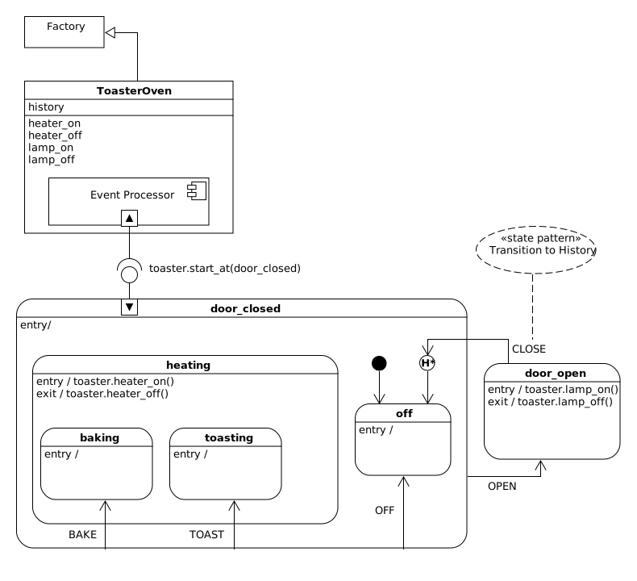In the above design we see that we have built a ToasterOven class which inherits
from the Factory. This means that it will have it’s own thread, queues and we
will get the convenient syntax for building up the statechart. The ToasterOven class
has a history, and some methods which do toaster-oven-kind-of-things. We will
make a toaster by instantiating the ToasterOven class, then build up the HSM
using the factory syntax, then link the toaster’s event processor to this HSM
with the start_at method.
This HSM consists of two high level states: door_closed and door_open. From inspection we see that when the statechart is first turned on, it will climb into the off state. If the user issues a BAKE signal, it will begin heating then enter the baking state. Similarly, the TOAST signal will cause the heater to turn on and enter the toasting state.
If an OFF or OPEN event is experienced in either the baking or toasting states the heater will be turned off as the event processor transitions out of the heating state.
If the door is opened, an OPEN signal will fire causing the event processor to follow the Harel Formalism leaving the state(s) and enter the door_open state.
Now, if the user of the toaster oven closed the door, they would expect the toaster oven to remember what it was doing and re-enter that mode of operation.
This is what the little H* icon is doing. It represents the UML pseudostate called deep history. When the statechart experiences a CLOSE event while in the door_open state, it should change it’s target state to represent the last mode of operation. So you can think of the H* icon as a programmable arrow, where the start of it is on the door_open state and it’s terminal end pointing to the last substate of door_closed before the door was opened.
This library does not support the deep history pseudostate. This is because the event processor at the heart of the library doesn’t. Miro Samek writes code for embedded systems which need to be fast and do not have a lot of memory. So instead of adding a set of heavy generalized history features; he provided a way that you can design it into your statechart without relying upon the framework. The engineering trade off was to favor speed and simplicity over syntactical convenience.
Here is how you can add deep history to your toaster oven:
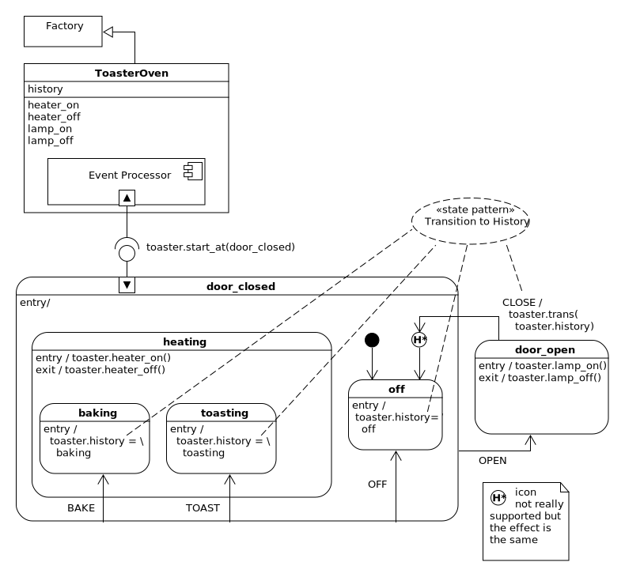When we enter baking, toasting or off we just take its state method and store it in the history attribute. If the statechart ever finds itself in the door_open state, the CLOSE event will transition to the last mode of operation by transitioning to the state stored in the history attribute. That’s it.
So let’s build up this design and test it.
import time
from miros import pp
from miros import Factory
from miros import signals, Event, return_status
# Create a ToasterOven class from Factory
class ToasterOven(Factory):
def __init__(self, name):
super().__init__(name)
self.history = None
def heater_on(toaster):
toaster.scribble("heater on")
def heater_off(toaster):
toaster.scribble("heater off")
def lamp_off(toaster):
toaster.scribble("lamp off")
def lamp_on(toaster):
toaster.scribble("lamp on")
# create the callback handlers for the HSM
def door_closed_init(toaster, e):
status = toaster.trans(off)
return status
def door_closed_off(toaster, e):
status = toaster.trans(off)
return status
def door_closed_open(toaster, e):
status = toaster.trans(door_open)
return status
def door_closed_bake(toasting, e):
status = toaster.trans(baking)
return status
def door_closed_toast(toaster, e):
status = toaster.trans(toasting)
return status
def door_open_entry(toaster, e):
status = return_status.HANDLED
toaster.lamp_on()
def door_open_exit(toaster, e):
status = return_status.HANDLED
toaster.lamp_off()
def door_open_close(toaster, e):
status = toaster.trans(toaster.history)
return status
def heating_entry(toaster, e):
status = return_status.HANDLED
toaster.heater_on()
return status
def heating_exit(toaster, e):
status = return_status.HANDLED
toaster.heater_off()
return status
def off_entry(toaster, e):
toaster.history = off
return return_status.HANDLED
def baking_entry(toaster, e):
toaster.history = baking
return return_status.HANDLED
def toasting_entry(toaster, e):
toaster.history = toasting
return return_status.HANDLED
# make a toaster object
toaster = ToasterOven("easy_bake")
door_closed = toaster.create(state="door_closed"). \
catch(signal=signals.INIT_SIGNAL,
handler=door_closed_init). \
catch(signal=signals.OFF,
handler=door_closed_off). \
catch(signal=signals.OPEN,
handler=door_closed_open). \
catch(signal=signals.BAKE,
handler=door_closed_bake). \
catch(signal=signals.TOAST,
handler=door_closed_toast). \
to_method()
door_open = toaster.create(state="door_open"). \
catch(signal=signals.ENTRY_SIGNAL,
handler=door_open_entry). \
catch(signal=signals.EXIT_SIGNAL,
handler=door_open_exit). \
catch(signal=signals.CLOSE,
handler=door_open_close). \
to_method()
heating = toaster.create(state="heating"). \
catch(signal=signals.ENTRY_SIGNAL,
handler=heating_entry). \
catch(signal=signals.EXIT_SIGNAL,
handler=heating_exit). \
to_method()
baking = toaster.create(state="baking"). \
catch(signal=signals.ENTRY_SIGNAL,
handler=baking_entry). \
to_method()
toasting = toaster.create(state="toasting"). \
catch(signal=signals.ENTRY_SIGNAL,
handler=toasting_entry). \
to_method()
off = toaster.create(state="off"). \
catch(signal=signals.ENTRY_SIGNAL,
handler=off_entry). \
to_method()
# now we nest them
toaster.nest(door_closed, parent=None). \
nest(door_open, parent=None). \
nest(heating, parent=door_closed). \
nest(off, parent=door_closed). \
nest(baking, parent=heating). \
nest(toasting, parent=heating)
# start up the statechart
toaster.start_at(door_closed)
toaster.post_fifo(Event(signal=signals.BAKE))
toaster.post_fifo(Event(signal=signals.OPEN))
toaster.post_fifo(Event(signal=signals.CLOSE))
time.sleep(0.01)
toaster.post_fifo(Event(signal=signals.TOAST))
toaster.post_fifo(Event(signal=signals.OPEN))
toaster.post_fifo(Event(signal=signals.CLOSE))
time.sleep(0.01)
toaster.post_fifo(Event(signal=signals.OFF))
toaster.post_fifo(Event(signal=signals.OPEN))
toaster.post_fifo(Event(signal=signals.CLOSE))
time.sleep(0.01)
print(toaster.trace())
If we run this code we produce a high level trace of its behavior:
[2017-12-20 09:19:33.273324] [easy_bake] e->start_at() top->off
[2017-12-20 09:19:33.273324] [easy_bake] e->BAKE() off->baking
[2017-12-20 09:19:33.273324] [easy_bake] e->OPEN() baking->door_open
[2017-12-20 09:19:33.274325] [easy_bake] e->CLOSE() door_open->baking
[2017-12-20 09:19:33.283337] [easy_bake] e->TOAST() baking->toasting
[2017-12-20 09:19:33.283337] [easy_bake] e->OPEN() toasting->door_open
[2017-12-20 09:19:33.283337] [easy_bake] e->CLOSE() door_open->toasting
[2017-12-20 09:19:33.293338] [easy_bake] e->OFF() toasting->off
[2017-12-20 09:19:33.293338] [easy_bake] e->OPEN() off->door_open
[2017-12-20 09:19:33.293839] [easy_bake] e->CLOSE() door_open->off
Now let’s break it into parts and make a few sequence diagrams so we can consider the results.
We see that when we put the oven into its baking mode, open and close the door it goes back into it’s baking mode, good:
[2017-12-20 09:19:33.273324] [easy_bake] e->start_at() top->off
[2017-12-20 09:19:33.273324] [easy_bake] e->BAKE() off->baking
[2017-12-20 09:19:33.273324] [easy_bake] e->OPEN() baking->door_open
[2017-12-20 09:19:33.274325] [easy_bake] e->CLOSE() door_open->baking
[ Chart: easy_bake ]
top off baking door_open
+start_at()->| | |
| | | |
| +--BAKE()--->| |
| | | |
| | +--OPEN()--->|
| | | |
| | +<-CLOSE()---|
| | | |
We see that when we put the oven into it’s toasting mode, open and close the door it goes back into it’s toasting mode, good:
[2017-12-20 09:19:33.283337] [easy_bake] e->TOAST() baking->toasting
[2017-12-20 09:19:33.283337] [easy_bake] e->OPEN() toasting->door_open
[2017-12-20 09:19:33.283337] [easy_bake] e->CLOSE() door_open->toasting
[ Chart: easy_bake ]
baking toasting door_open
+-TOAST()->| |
| | |
| +-OPEN()-->|
| | |
| +<CLOSE()--|
| | |
We see that when we turn the toaster off, then open and close the door it goes back into the off state, the design works.
[2017-12-20 09:19:33.293338] [easy_bake] e->OFF() toasting->off
[2017-12-20 09:19:33.293338] [easy_bake] e->OPEN() off->door_open
[2017-12-20 09:19:33.293839] [easy_bake] e->CLOSE() door_open->off
[ Chart: easy_bake ]
toasting off door_open
+--OFF()-->| |
| | |
| +-OPEN()-->|
| | |
| +<CLOSE()--|
| | |
Multichart Race#
See: setting up rabbit mq